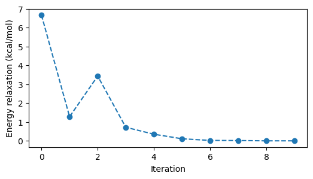

Ground state#
import veloxchem as vlx
The initial structure can e.g. be defined in terms of a SMILES string.
molecule = vlx.Molecule.read_smiles("OC=CC=O")
molecule.show()
3Dmol.js failed to load for some reason. Please check your browser console for error messages.
Define the electronic structure theory method.
scf_drv = vlx.XtbDriver()
Optimize the molecule structure with the OptimizationDriver class in VeloxChem.
opt_drv = vlx.OptimizationDriver(scf_drv)
opt_drv.ostream.mute()
opt_results = opt_drv.compute(molecule)
The SCF energies calculated in the optimization process are available in the resulting object.
from matplotlib import pyplot as plt
e_min_in_au = min(opt_results["opt_energies"])
energies_in_kcalpermol = [
(e - e_min_in_au) * vlx.hartree_in_kcalpermol() for e in opt_results["opt_energies"]
]
fig, ax = plt.subplots(figsize=(6, 3))
ax.plot(energies_in_kcalpermol, "o--")
ax.set_xlabel("Iteration")
ax.set_ylabel(r"Energy relaxation (kcal/mol)")
plt.show()

The molecular structure relaxation can be visualized.
import py3Dmol as p3d
viewer = p3d.view(width=400, height=300)
viewer.addModelsAsFrames("".join(opt_results["opt_geometries"]))
viewer.animate({"loop": "forward"})
viewer.setViewStyle({"style": "outline", "width": 0.05})
viewer.setStyle({"stick": {}, "sphere": {"scale": 0.25}})
viewer.zoomTo()
viewer.show()
3Dmol.js failed to load for some reason. Please check your browser console for error messages.
Larger molecules#
Cafestol and kahweol are molecules present in Robusta and Arabica coffee beans, respectively.
We here use the semi-empirical tight binding method named xTB and a code implementation that has been interfaced to VeloxChem.
The difference between cafestol and kahweol is very subtle, essentially only one double bond and two H atoms.
We optimize structures and compare the initial and final geometries.
scf_drv = vlx.XtbDriver()
opt_drv = vlx.OptimizationDriver(scf_drv)
opt_drv.ostream.mute()
opt_cafestol_results = opt_drv.compute(cafestol)
opt_kahweol_results = opt_drv.compute(kahweol)
viewer = p3d.view(viewergrid=(1, 2), width=600, height=250, linked=True)
viewer.addModel(cafestol_xyz, "xyz", viewer=(0, 0))
viewer.addModel(opt_cafestol_results["final_geometry"], "xyz", viewer=(0, 0))
viewer.addModel(kahweol_xyz, "xyz", viewer=(0, 1))
viewer.addModel(opt_kahweol_results["final_geometry"], "xyz", viewer=(0, 1))
viewer.setViewStyle({"style": "outline", "width": 0.05})
viewer.setStyle({"stick": {}, "sphere": {"scale": 0.25}})
viewer.zoomTo()
viewer.show()
3Dmol.js failed to load for some reason. Please check your browser console for error messages.
The initial and final structures are close so you may need to zoom in to see the subtle differences.